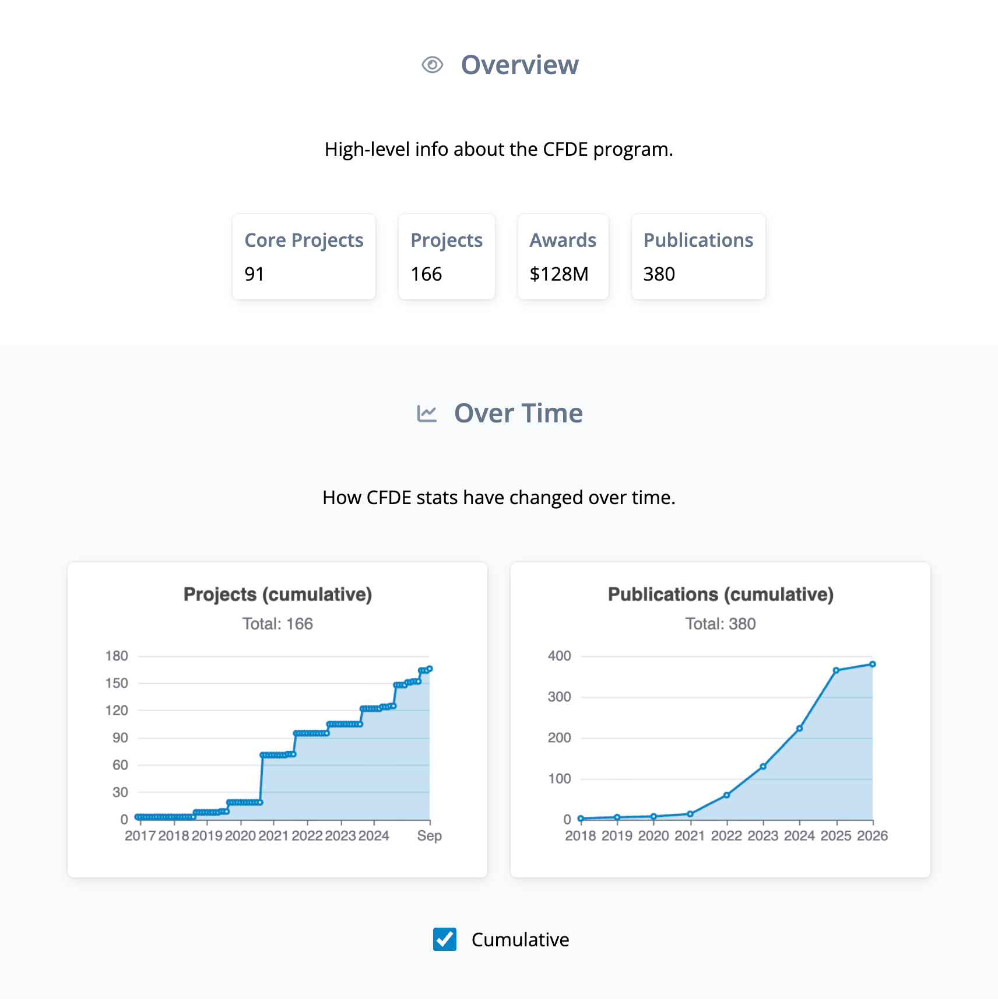
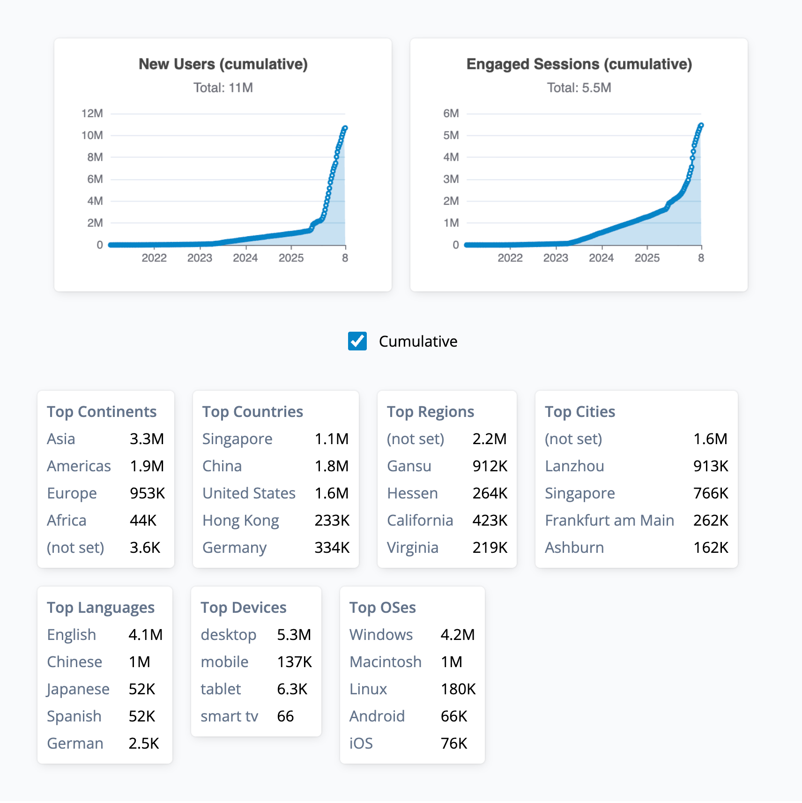
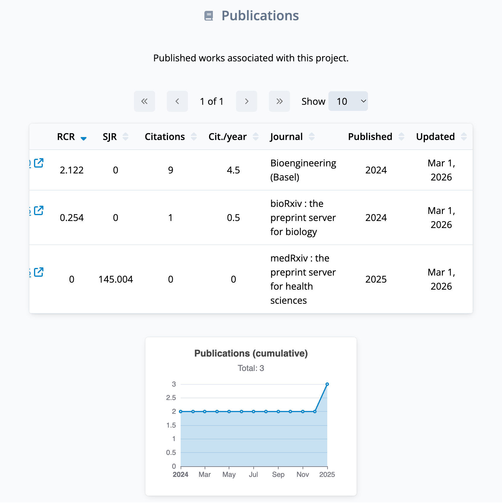
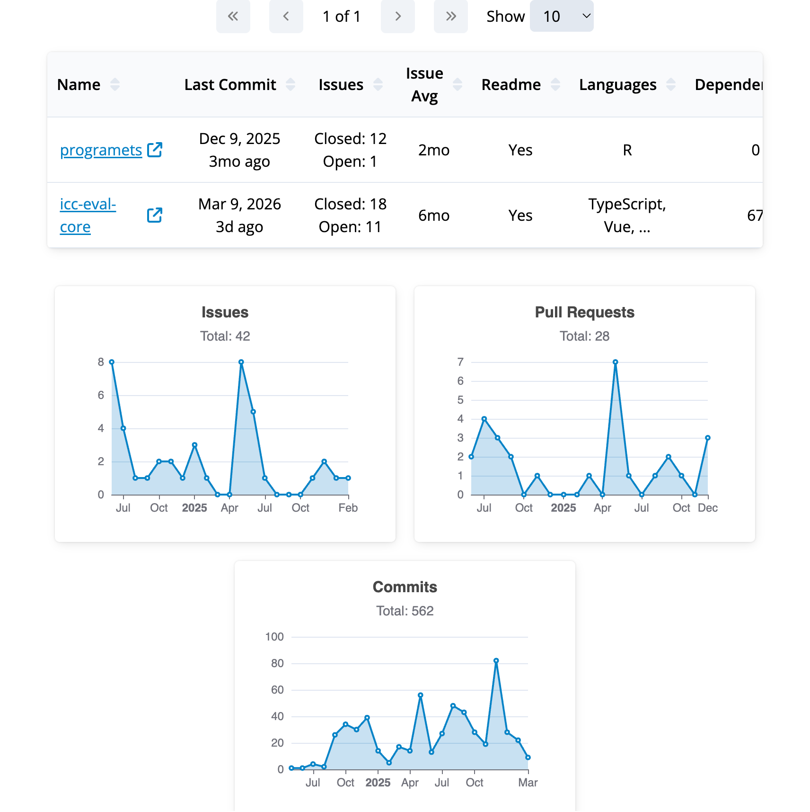

Motivation
The ICC is tasked with (among other things) gathering and presenting information about CFDE projects. We want to allow project groups and the NIH to easily see the activity and impact of their work in a simple and centralized way.
The info we gather currently includes publications, software stats, and website metrics. These come from a variety of sources, take many forms and sizes, and can be sensitive or private, which presents several challenges that led us to develop a unique and flexible software architecture to handle them.
Code discussed here is viewable in the public GitHub repo:

Challenges
Technologies
Strategy
To address transparency, we devised a public & private repo split. Public has (virtually) all of our code and the non-sensitive info. Private is barebones: it has one basic GitHub Actions workflow (to copy and run the exact code in public) and the sensitive info.
To address time burden, we've devised ways to keep the manual steps groups need to perform as minimal as possible:
Pipeline
nih-cfde/icc-eval-core
nih-cfde/icc-eval-core-private
Start on daily schedule
Run gather process in public mode
Funding Opportunities
ID, activity code, etc.
commonfund.nih.gov
Projects
#, name, award $, dates, etc.
reporter.nih.gov
Publications
Title, date, citations, etc.
iCite, RePORTER
Journals
Name, rank, ISSN, etc.
E-utilities, Scimago
Store (public) results in repo
Raw & normalized/pruned JSON
Trigger private repo
Check out public repo code
Get GH Actions secrets (API keys)
Run gather process in private mode
Google Analytics
Get all sites we have access to
Match sites to projects by tag
Gather # of users/sessions over time, top countries, etc.
GitHub
Search GitHub for any repo tagged with CFDE project #
Match repos to projects by tag
Gather stars, PRs, commits over time, languages, etc.
Store (private) results in repo
Raw & normalized/pruned JSON
Build dashboard and deploy to live site
(just functionality & public info, no private)
Access
To ensure appropriate access to private info, we have implemented a standard architecture with social sign-on authentication:
Private Repo
JSON
Backend
Database
Backend
REST API
Frontend
Dashboard
ORCID
Auth
Go to live, public dashboard
Browse public info
Try to look at your project
FE makes request to BE for private info
Access denied, request fails
Click "log in"
FE makes request to BE
Redirected to ORCID, log in
BE returns auth cookie
Browser saves cookie, FE can't see it
Try to access your project again
Browser auto-attaches auth cookie
BE checks if your ORCID has access
BE returns (private) project info
FE displays it in dashboard
Results
Our system is fully automatic, runs quickly and reliably, and is flexible enough to gather many other types of info in the future. The dashboard has received positive feedback from project groups and NIH staff, successful in providing a convenient and effective way to see project impact across the CFDE.



